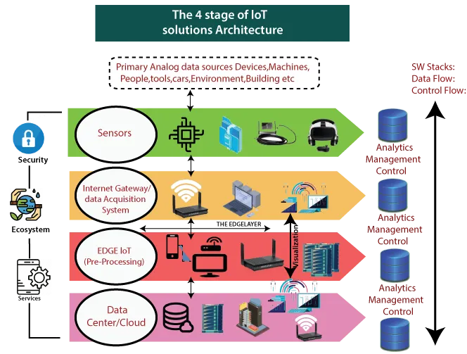

My Presentation to Propose an IoT Project to the Faculty of Engineering During my Second Year
This image showcases of the capabilities of IoT-enabled infrastructure:

By far, one of the most common utility of IOT in the industry is the field of : Autonomous and Connected Vehicles

One of the most promising IoT use cases is in creating smarter, more efficient cities. Public energy grids can be optimized to balance workloads, predict energy surges, and distribute energy more equitably to customers.
Economic Experts Approve:
In a first stage of the move towards Industry 4.0the most immediate consequence of applying digital processes is a drop in operational costs. But this is all part of a more ambitious process.
For Example:
Many projects launched recently by large companies like Ferrovial, Iberdrola, Endesa, Adif, and Renfe or Repsol, applying innovation as a means of making more efficient use of existing infrastructures, and of adding value to structures built from scratch.
According to an ONVIA report, there are several trends providing a competitive advantage in the contracting of public works, one of which is linked to the development of smart infrastructure.
Case Study: CISCO Transport for New South Wales (TfNSW): Use of IoT, AI, and edge computing to find more effective solutions for TfNSW.
The Cisco HyperFlexTM with NVIDIA Tesla T4 GPUs
Cisco’s client TfNSW was facing some issues, with over 8 million people, their transportation system was facing issues like congestions on intersections and low traffic priority on other totally viable intersections.
TfNSW needed a sustainable solution and it needed it quickly. CISCO decided to do what it does best: put its best technology to good use.
First, cisco needed everyone on the street to be connected: buses, cars, bicycles, pedestrians, even ships! IoT was the answer. With the help of IoT for establishing connections and cisco’s partner, Cohda Wireless – LocateIQ; Innovation Central, for managing the data effectively and efficiently, the network was established:
Using Cohda Wireless Wi-Fi Road Side Units (RSUs), sensors detect the presence of the device (smartwatch, phone, vehicle, etc..) connected on the network, then the Cohda Wireless application pinpoints the location of that device down to the lane level in real time.
Next, now that cisco acquired all the data it needs from the street in real time, it was time to do something with it; the part of IoT and edge computing was done, so it was time for AI to do its job.
Cisco used its AI-enabled Reasoning Engine, which uses unsupervised learning to understand the relationship between objects and their behaviour. The system then processed the data and reported the number of incidents it identified over a period of time.
This information can then be used to limit high-risk intersections based on the trend of incidents, and therefore enable prioritized early intervention.
Now What?
Okay, IOT works pretty well and is probably a great investment, but how does everything actually work? How do engineers design these very large scale IOT systems?
We will be getting into a little bit of a technical background about the industry of IOT before diving into my app suggestion.
IOT System Architecture:

IOT System Workflow:
IOT Backbone:
At a basic level, Internet of Things refers to any system of interconnected devices that have sensors and embedded processing abilities.
IOT Backbone Sketch:
Security:
Security is an important aspect in IOT because, even though connected devices can give business a real boost, anything that’s connected to the Internet can be vulnerable to cyber attacks. Hence, IOT security is the technology area concerned with safeguarding connected devices and networks in the internet of things.
The Project I propose will be similar to this concise chart:
After mentioning the benefits of using IoT in infrastructure – mainly in automated and connected vehicles, street management, etc.. - We move on to the little project I would like to propose!
What I will achieve in this project is creating a prototype that sends location by GPS from the IoT device (could be planted anywhere) to some server hosting a network of those devices, so that the server could perform some backend tasks and present them in a nice GUI or a website frontend.
Some of the tasks the server could do:
- Map all the routes fed by the IoT devices to one huge image.
- Find the user’s best route from the map above to his given destination and time management and comfort.
- Keep track of the user’s activity and present it in a user-friendly dashboard (database thing).